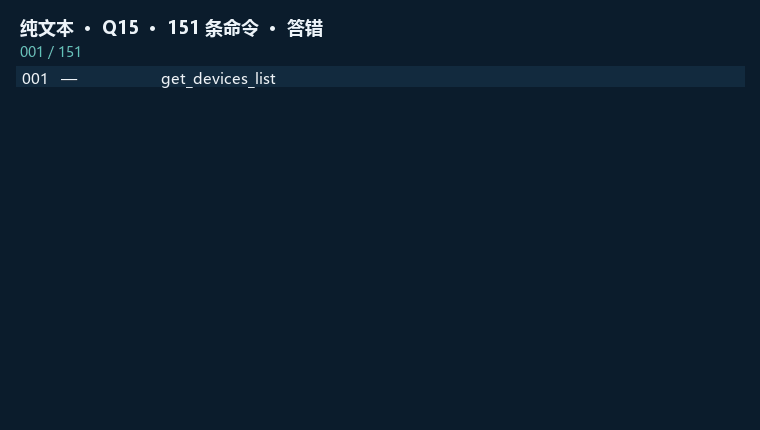
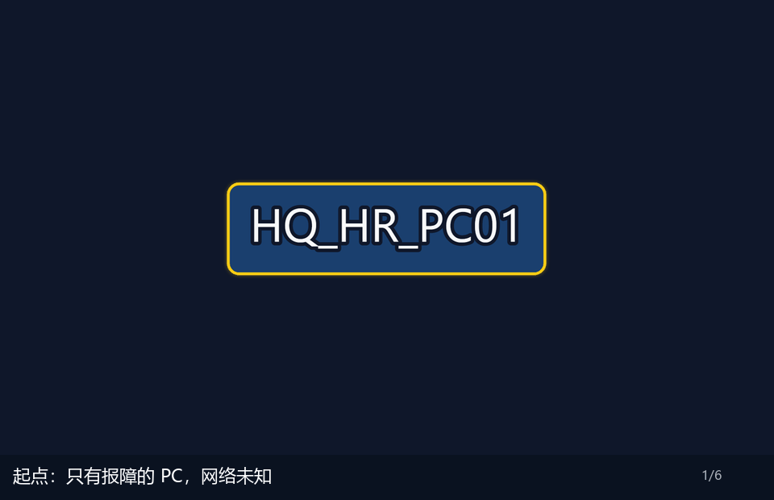
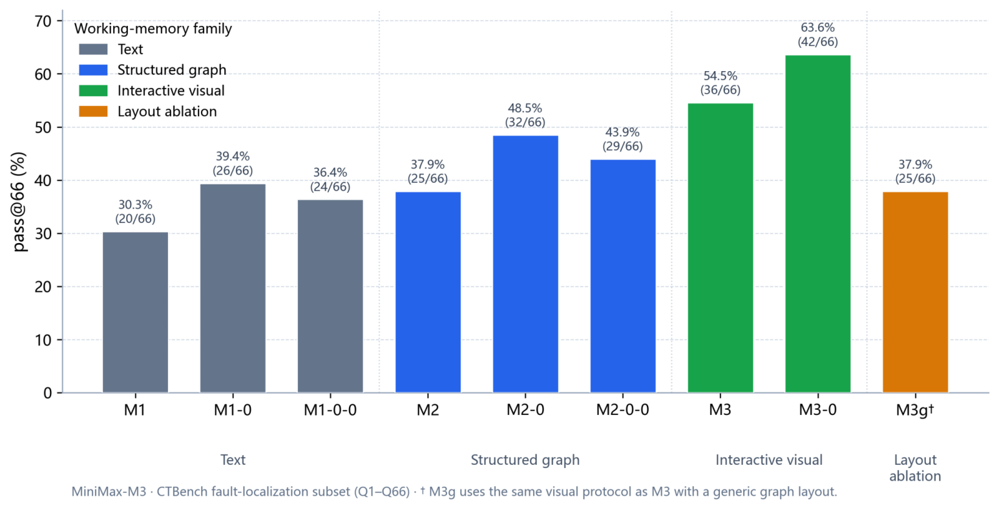
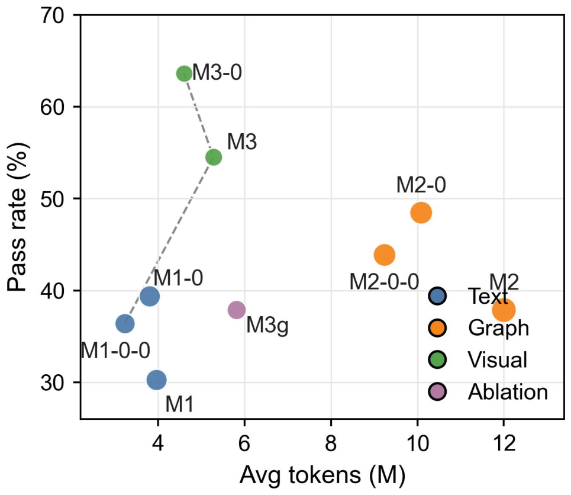

01 / Problem
证据都拿到了，Agent 还是认错了防火墙
把 LLM Agent 放进多设备、多路径的真实网络排障，会看到一种反直觉的失效：每一条 CLI 它都读得懂，但设备邻接、路径分叉这些空间关系散落在越滚越长的日志里，每往前一跳都要从碎片里重新拼一遍。我们把这种失效叫做「拓扑失忆」。它听起来抽象，先看一道真实的题。
题目是一台办公 PC 上不了外网。网里有一对互为热备的双防火墙，标准答案是其中一台没启用全局热备协议（HRP）。纯文本 Agent 发了 151 条命令，把两台防火墙的热备状态都查过了——证据它拿到手了。但它最后把根因判给了另一台防火墙的安全策略，还捎带上一台出口网关的 NAT 配置：两条都错，而且认错了是哪一台在这条路径上出问题。
缺的不是阅读能力，也不是知识：热备该怎么查、命令怎么读，它全都会。缺的是空间记忆——两台并行的防火墙在这条路径上各自站在哪个位置，这件事没有一处稳定地存着。排障越深，局部观测越多，整体空间关系反而在长文本里坍塌。堆更多上下文、上微调和强化学习，都绕不开这一点：模型缺的不是知识，而是持续维护网络空间状态的能力。
现在换掉唯一一个变量。同一道题、同一个底座模型、同一套可用命令，只把「网长什么样」从模型脑子里挪进系统——也就是换成 NetCanvas。下面两条轨迹放在一起看。左边，纯文本那 151 条命令的回放；右边，那张网逐帧在它眼前长出来。


两台防火墙的并行关系一旦在图上摆开，问题就从「哪台防火墙有毛病」变成了「这条路径上这台防火墙该起什么作用」。这一次它用了 49 次工具调用，其中只有 5 次是发命令，答案一次就对。151 比 49，赢的不是更强的推理，而是它不再需要在长文本里一遍遍重建那张网。后面效果一节那组 30.3% 到 54.5%，背后就是一道道这样的题。
02 / Solution
Close the loop between probing and seeing
把镜头从题目移到系统。系统改的不是参数，而是模型解决问题的路径——证据进到哪里、当前这一步看见什么、下一步如何在图上取景。不是把专家经验写进 Prompt，而是把专家的工作方式写进 Agent 的运行时。
同一张网，在人和 Agent 眼里本来就不是一回事。资深网工排障时，脑子里始终悬着一张活图：流量从哪进、在哪分流、防火墙卡在第几跳。纯文本 Agent 面对的却是一维滚动的 CLI，邻接、分叉、区域层级全被压扁进回显，每往前一跳都要从碎片里重新脑补。NetCanvas 做的，是把那张活图从「只能存在于专家脑子里」，变成系统可以维护、模型可以点选的工作记忆。
The loop is closed:
- Probe — issue CLI on a device; the environment returns raw text.
- Ingest — a dedicated extractor writes routes, interfaces, and next hops into a growing graph. New evidence goes into the map, not only onto the end of the chat.
- Render — crop this step’s view in an engineer’s layout, plus a clickable index. The agent sees this frame, not a dump of every node.
- Choose the next step — the agent can issue another CLI command; switch the view’s scope or evidence plane; inspect a node or link; trace an L2 or L3 path; or stop probing and answer. Every visual action returns a new frame for the next decision.

The loop determines how evidence enters working memory and guides the next action. Three design choices make it more than a static picture: continuous ingestion keeps spatial state across probes; on-demand framing shows only the device, link, or path needed now; and an engineer-native layout makes that spatial state directly readable. The next section tests these choices against structured data, static maps, and a generic layout.
03 / Effect
What we added is not “a figure”
One question is not a result. On CTBench Q1–Q66, same backbone, same CLI, same scoring — only the working-memory form changes. Best-of-3, strict set match, no partial credit. First, the four worlds the agent actually receives on the same question.

JSON is not enough. The same ingest, symbols only in front: 37.9% (25/66), average steps up to 217. The graph lives in the system, not as spatial structure the model can use. A static global picture is not enough. 24/66 and 29/66, both below the 36/66 that redraws and highlights. The wrong layout is not enough either. Keep ingest and the click protocol; swap only coordinates for a force-directed view, and 54.5% falls back to 37.9%. With a physical-link prior, NetCanvas reaches 63.6% (42/66) — the ceiling of working memory plus a base map, not the no-prior 30.3% vs 54.5% contrast.


So: structure alone is not enough, a picture is not enough, “being able to click” is not enough. What the harness supplies is a combination of four things — a continuously ingested graph state, views that update with probing, a layout that follows how engineers draw, and an interaction protocol that frames on demand. Miss any one, and you are back to feeding an extra picture.
04 / Next
The next scaling step for network agents happens outside the model
NetCanvas still misses 30 of 66. Almost none of those are “draw more pictures.” The remaining faults sit in extraction (VRF, prefix-lists) and in multi-hop causal close-out after the evidence is already in context. The harness can take over unreliable organisation and memory. It cannot take over those two.
The gain we can point to is mostly probe coverage: the device that used to be skipped gets visited, because the path is visible. Dual-firewall / HRP / ECMP jumps hard; cross-city VPN barely moves. That is the boundary, not a slogan.
Same backbone: 30.3% as a naked model, 54.5% once the working method sits outside it. You do not have to turn the weights into a senior engineer first. You can first let the system design a smarter way of looking at the network.
Cite this work
@misc{netcanvas2026,
title = {{NetCanvas}: Interactive Visual Working Memory for LLM-Based IP Network Fault Localization},
author = {Cai, Manjing and Wu, Chenwei and You, Qiheng and Sun, Weijian and Chen, Xin},
year = {2026},
month = {aug},
note = {Preprint},
url = {https://caimanjing.github.io/netcanvas/}
}Project page: https://caimanjing.github.io/netcanvas/. The paper PDF is at the top of this page. This work is not listed on arXiv yet. The repository currently holds the project page and paper materials, not runnable code.